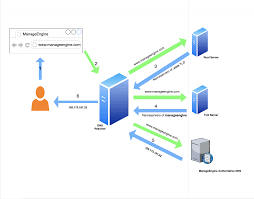
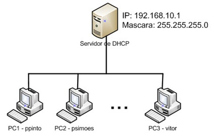
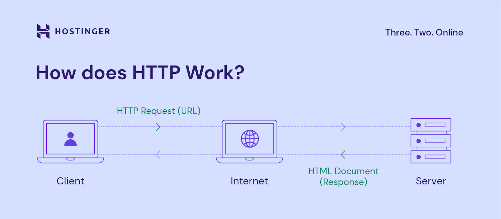
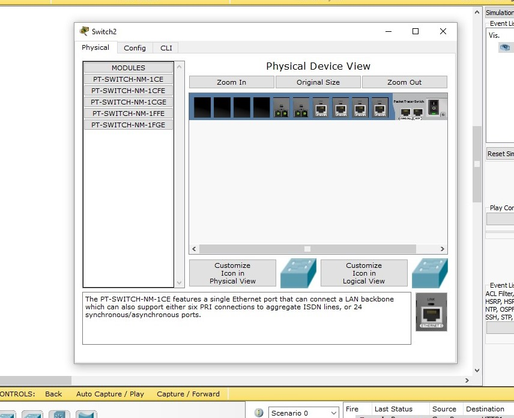
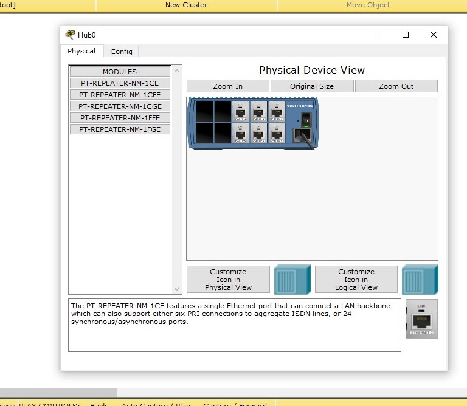

Oque é a Infraestrutura de um Site
A infraestrutura de um site compreende os componentes fundamentais que o suportam, incluindo servidores, redes, armazenamento de dados, software e serviços de hospedagem. Essa estrutura permite a disponibilidade, desempenho e segurança do site, gerenciando o tráfego de usuários e garantindo a integridade dos dados. A escalabilidade é essencial para lidar com aumentos de demanda, enquanto backups e medidas de redundância asseguram a continuidade em casos de falhas. A infraestrutura é crucial para a experiência do usuário e o funcionamento eficiente do site.
- Servidores -
Um servidor pode ser um único computador ou vários com o único propósito de fornecer serviços, recursos ou dados a outros computadores da rede. Esses serviços podem envolver hospedagem de sites, armazenamento de arquivos, gerenciamento de e-mail, processamento de dados, autenticação de usuários e outros recursos. A palavra “servidor” pode ser aplicada tanto ao hardware quanto ao software que executa esses serviços.
-Exemplo Visual-
- DNS -
Um servidor DNS converte domínios legíveis por pessoas, como www.ABEEJ.com, em endereços compreensíveis por máquina, o que facilita a navegação na Internet. É importante na resolução de nomes de domínio para seus endereços IP correspondentes e é essencial para a funcionalidade da web.
- IMAGEM -

- DHCP -
DHCP é um protocolo que aloca automaticamente endereços para dispositivos como computadores e smartphones, além de retirar a necessidade de configuração manual da rede. O DHCP promove a otimização do uso de endereços IP e facilita a comunicação em redes locais.
- IMAGEM -

- HTTP -
Um servidor HTTP é um software que processa solicitações de clientes, como navegadores que visitam a web, enviando páginas da web e outros recursos solicitados pelos clientes pela Internet. Funciona como intermediário entre o cliente e o conteúdo web, processa solicitações e fornece respostas que facilitam uma comunicação eficaz.
- IMAGEM -

- SWITCH DE REDE -
Um switch é um componente que facilita a associação de vários computadores, impressoras e outros dispositivos. Sua função é servir como ponte entre os dispositivos que estão em rede e mandar a transmissão de informações entre eles. Os switches são essenciais para qualquer rede porque permitem a comunicação entre dispositivos e facilitam a transmissão de dados eficazes.
- IMAGEM -

- HUB DE REDE -
Um hub pode ser definido como um dispositivo de conexão central (nó de rede) que envia dados simultaneamente para todos os computadores ou dispositivos Ethernet conectados, independentemente do endereçamento correto do pacote.
- IMAGEM -
